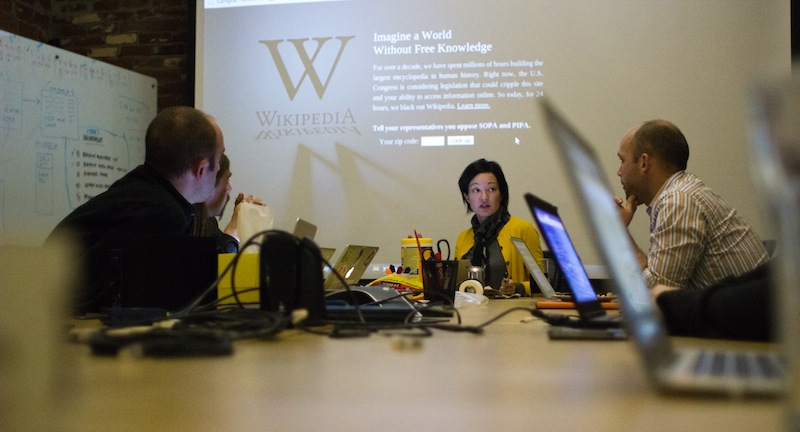
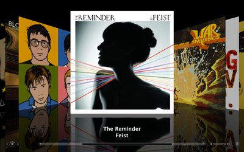

Wikimedia Foundation Coding Exercise
Table of Contents
Who we are
At the Wikimedia Foundation, we are creative and motivated people who work in an open and collaborative environment. We are mission-driven and committed to making knowledge free. Are you? Much of the staff of the Foundation is from the Wikimedia community. We consider experience with the Wikimedia projects and with volunteer communities to be extremely valuable.
Task
The task should take no more than 3 hours. During the task you have several challenges:Challenge 1
Optimise this page for mobile browsing as well as desktop browsing without any horizontal scrolling. If you feel the urge improve the design of the page.Challenge 2
Enhance the page with one or more of the following features.- Table of Contents
- Certain articles are extremely long and contain several sub sections. On certain mobile devices it can be quite hard to return to other sections in an article. The challenge is to construct a mechanism with which a user can jump to any section in the page from wherever they are in the page.
- Cover flow
- When the user rotates the screen, convert the layout into a slide show where each slide is a section. The best solutions will resemble a cover flow
- 
- Full screen image preview
- Make it so that when a user clicks on an image in the page the image expands to take up the full screen. Use the title of the images as a caption.
- Personal annotations
- Allow a user to add their own personal annotations within this document. Make sure that when the page is refreshed these annotations are still accessible.
- Add Location to page
- This article has no location. Where a device has geo location provide a mechanism for adding the users location to the article. Note there is no need for this location to persist across a page refresh.
- Find on this page
- Develop a search function that takes a phrase and highlights text on the page which matches the phrase. (Essentially mimic the find function on your browser).
- Report inaccuracy / citation needed
- Provide a method for a user to provide feedback on a spelling mistakes, missing citations and inaccuracies in the current document.
Your Solution
- Your solution must be purely css and javascript based and must reside in script.js and script.css
- You must assume that everything inside the #content element is generated by the server and cannot be changed however feel free to add markup outside this element where needed.
- You must not introduce any additional javascript libraries including jquery plugins
- You are free to use jQuery but no other libraries.
- Your solution should work in Google Chrome and be agnostic to the device size.
- Your solution must run off a file:/// uri
Assessment
Your task will be assessed based on but not limited to or exclusively to:- User experience
- Appearance
- Coding style
- Completeness of solution.
- Creativity of solution
- Simplicity of solution
- Use of CSS3 and HTML5
- Adaptability to different device screen widths and resolutions